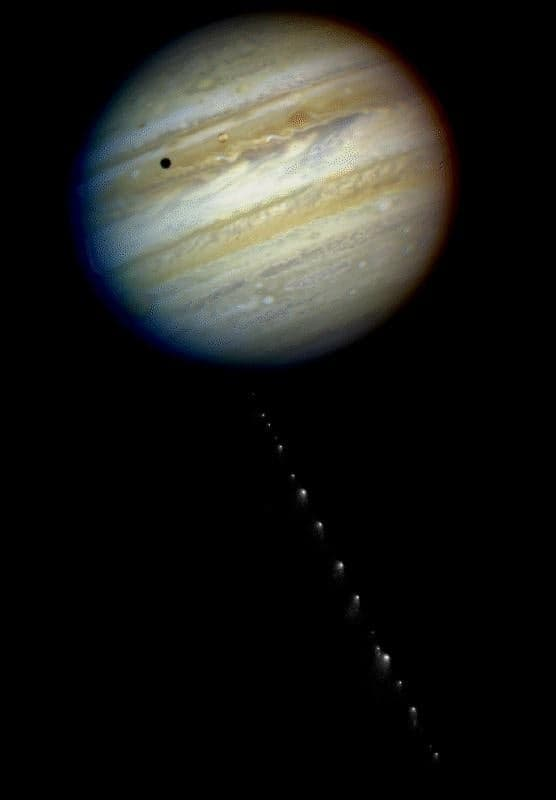
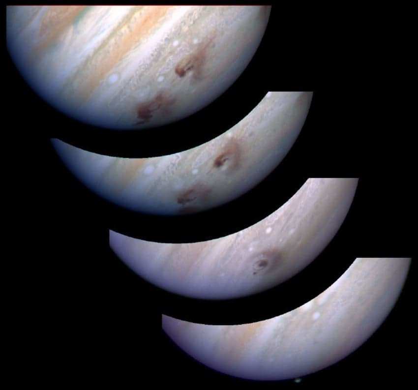

운석충돌로 인해 섬광이 발생하는 목성의 모습들
목성 근처에 소행성이 워낙 많고 목성의 중력이 워낙 강해서 저런일들이 자주 일어난다고함

그리고 목성과 관련된 천체충돌중 가장 유명한게 1994년의 슈메이커-레비 혜성 충돌 사건인데

목성 근처에 다가온 슈메이커-레비 혜성이 로슈 한계 안쪽에 진입하자 여러조각으로 쪼개지며 목성과 여러번 충돌했고 가장 크게 충돌한것은 차르봄바 12만 개에 달하는 위력을 발생시켰다고함
- dc official App
댓글
수집 당시 댓글 165개
매개완 · 11.03 04:06:35
· piyo · 11.04 07:46:43
· ㅇㅇ · 11.04 09:37:36
땨뗘(봇) · 11.04 07:40:04
ㅇㅇ · 11.04 07:41:57
· ㅇㅇ · 11.04 12:24:33
삭제됨 · 11.04 07:42:39
· ㅇㅇ · 11.04 07:58:09
piyo · 11.04 07:45:20
Secretpie · 11.04 07:46:41
ㅇㅇ · 11.04 07:47:54
· ㅇㅇ · 11.04 07:49:06
· ㅇㅇ · 11.04 14:01:00
· ㅇㅇ · 11.04 14:02:58
ㅇㅇ · 11.04 07:49:47
· ㅇㅇ · 11.04 07:59:59
· ㅇㅇ · 11.04 09:19:57
ㅇㅇ · 11.04 07:52:43
ㅇㅇ · 11.04 07:56:30
· ㅠㅠ · 11.04 08:04:48
ㅇㅇ · 11.04 07:57:16
ㅇㅇ · 11.04 07:58:53
· ㅇㅇ · 11.04 07:59:33
· 풀러리 · 11.04 08:02:58
· ㅇㅇ · 11.04 08:26:46
· ㅇㅇ · 11.04 08:46:36
· ㅇㅇ · 11.04 09:00:12
· 설명충이된다 · 11.04 09:19:48
· ㅇㅇ · 11.04 09:22:13
· ㅇㅇ · 11.04 09:33:21
· ㅇㅇ · 11.04 09:42:51
JungNu · 11.04 07:58:56
JungNu · 11.04 07:59:00
JungNu · 11.04 07:59:09
캐피탈리즘 · 11.04 08:00:03
ㅇㅇ · 11.04 08:00:23
ㅇㅇ · 11.04 08:01:02
· ㅇㅇ · 11.04 08:01:10
· ㅇㅇ · 11.04 08:08:12
ㅇㅇ · 11.04 08:08:55
· ㅇㅇ · 11.04 08:11:56
· ㅇㅇ · 11.04 09:56:26
· ㅇㅇ · 11.04 11:16:59
· ㅇㅇ · 11.04 21:33:10
로갤러 · 11.04 08:26:39
ㅇㅇ · 11.04 08:29:21
ㅇㅇ · 11.04 08:37:16
ㅇㅇ · 11.04 08:39:11
123 · 11.04 08:39:20
ㅇㅇ · 11.04 08:39:59
· ㅇㅇ · 11.04 09:14:21
· 여혐에미친종말론자 · 11.04 09:16:18
ㅇㅇ · 11.04 08:50:16
ㅇㅇ · 11.04 08:54:34
· 1234 · 11.04 09:58:42
· ㅇㅇ · 11.04 20:25:25
ㅇㅇ · 11.04 08:58:26
ㅇㅇ · 11.04 09:00:17
ㅇㅇ · 11.04 09:07:28
ㅇㅇ · 11.04 09:10:50
ㅇㅇ · 11.04 09:14:19
· ㅇㅇ · 11.04 09:16:15
· ㅇㅇ · 11.04 20:24:45
ㅇㅇ · 11.04 09:23:22
ㅇㅇ · 11.04 09:25:23
ㅇㅇ · 11.04 09:30:09
ㅇㅇ · 11.04 09:31:35
ㅇㅇ · 11.04 09:34:28
ㅇㅇ · 11.04 09:35:23
ㅇㅇ · 11.04 09:36:19
· 이지러너 · 11.04 09:39:16
이지러너 · 11.04 09:37:49
준비아님말고 · 11.04 09:42:13
· ㅇㅇ · 11.04 09:46:30
· 준비아님말고 · 11.04 10:29:46
ㅇㅇ · 11.04 09:48:45
슈퍼지구민주투사 · 11.04 09:54:01
ks910204 · 11.04 09:57:26
ㅇㅇ · 11.04 10:00:53
ㅇㅇ · 11.04 10:41:20
ㅇㅇ · 11.04 10:50:36
ㅇㅇ · 11.04 11:01:35
ㅇㅇ · 11.04 11:09:43
ㅇㅇ · 11.04 11:10:00
ㅇㅇ · 11.04 11:25:22
ㅇㅇ · 11.04 11:28:32
ㅇㅇ · 11.04 11:38:37
ㅇㅇ · 11.04 11:50:08
ㅇㅇ · 11.04 11:50:56
ㅇㅇ · 11.04 12:07:59
ㅇㅇ · 11.04 12:11:45
ㅇㅇ · 11.04 13:13:48
너술취했지 · 11.04 14:57:46
ㅇㅇ · 11.04 16:12:19
ㅇㅇ · 11.04 17:26:30
· ㅇㅇ · 11.04 17:29:20
ㅇㅇ · 11.04 18:45:14
ㅇㅇ · 11.04 18:45:17
ㅇㅇ · 11.04 20:24:02
환란 전 교회 휴거 · 11.04 23:34:07
개꼴통청년 · 11.02 20:45:47
· Dreamybull · 11.02 20:46:49
· 개꼴통청년 · 11.02 20:48:03
· ㅇㅇ · 11.02 20:49:02
· ㅇㅇ · 11.02 20:57:01
· ㅇㅇ · 11.02 21:03:27
· ㅇㅇ · 11.02 21:04:50
· ㅇㅇ · 11.02 21:06:49
· ㅇㅇ · 11.02 21:07:38
· 연뚜 · 11.02 23:26:52
· 레이라 · 11.03 00:50:06
· 장성택 · 11.03 17:36:02
· ㅇㅇ · 11.04 07:59:36
· ㅇㅇ · 11.04 08:06:20
· ㅇㅇ · 11.04 09:03:30
· ㅇㅇ · 11.04 09:09:02
· ㅇㅇ · 11.04 11:15:44
ㅇㅇ · 11.02 20:49:29
ㅇㅇ · 11.02 20:49:50
· ㅇㅇ · 11.02 21:02:46
· ㅇㅇ · 11.02 21:05:03
· ㅇㅇ · 11.02 21:09:14
· ㅇㅇ · 11.02 21:10:51
· 깃늘 · 11.02 22:28:11
· 조장군 · 11.03 03:07:29
· ㅇㅇ · 11.03 04:06:04
· piyo · 11.04 07:45:57
· 준비아님말고 · 11.04 09:42:58
뀨몽가 · 11.02 20:50:58
ㅇㅇ · 11.02 20:52:33
· ㅇㅇ · 11.02 22:14:36
· ㅇㅇ · 11.04 07:43:43
· ㅇㅇ · 11.04 09:33:56
· ㅇㅇ · 11.04 10:21:55
ㅇㅇ · 11.02 20:54:52
· ㅇㅇ · 11.04 09:45:46
· ㅇㅇ · 11.04 10:47:31
수류탄이야 · 11.02 20:57:46
무삭제요리 · 11.02 21:00:26
ㅇㅇ · 11.02 21:00:59
· ㅇㅇ · 11.04 09:36:11
· ㅇㅇ · 11.04 09:37:07
· ㅇㅇ · 11.04 10:20:29
· ㅇㅇ · 11.04 10:22:44
ㅇㅇ · 11.02 21:07:37
· ㅇㅇ · 11.04 10:00:21
· ㅇㅇ · 11.04 10:22:32
ㅇㅇ · 11.02 21:07:40
ㅇㅇ · 11.02 21:10:02
· ㅇㅇ · 11.02 21:14:57
· ㅇㅇ · 11.04 08:24:24
· ㅇㅇ · 11.04 08:42:01
· ㅇㅇ · 11.04 10:56:41
· ㅇㅇ · 11.04 12:10:06
· ㅇㅇ · 11.04 12:12:31
· ㅇㅇ · 11.04 12:15:43
ㅇㅇ · 11.02 21:14:48
백석행 · 11.02 21:21:28
ㅇㅇ · 11.02 21:33:44
ㅇㅇ · 11.02 21:35:59
ㅇㅇ · 11.02 21:36:58
ㅇㅇ · 11.03 00:04:10
ㅇㅇ · 11.03 00:06:32
WhaleShark_ · 11.03 00:28:58
ㅇㅇ · 11.03 02:37:50